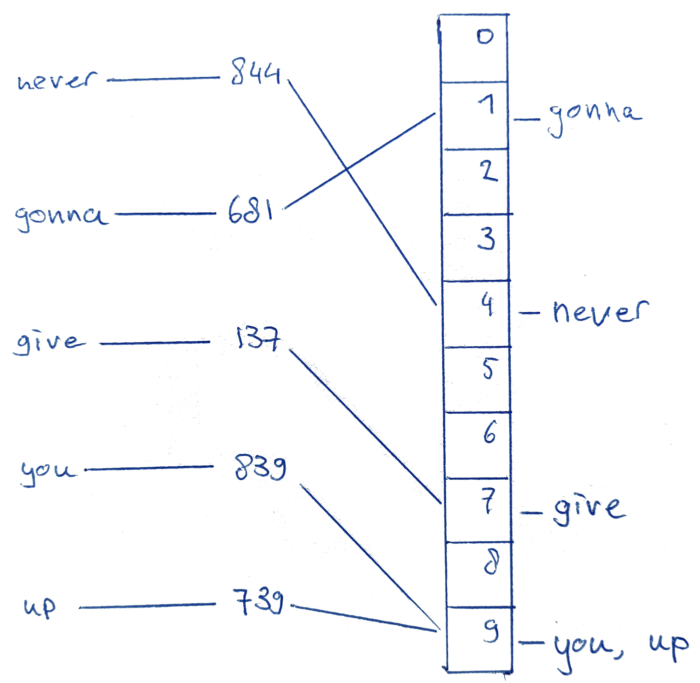

Why?

Jan Ouwens

 │ EqualsVerifier │ jqno.nl │
│ EqualsVerifier │ jqno.nl │  jqno
jqno
#fantasticlanguages
Java

 - properties
- properties
| Appeared in | 1995 |
| Used for | Enterprise back-end, Android |
| Paradigm | object-oriented |
| Typing | strong, static |
| Runtime | JVM |
 - creator
- creator

James Gosling
 - creator
- creator
Beard: ✅
 - what does it look like?
- what does it look like?
public class Program {
public static void main(String...args) {
for (int i = 1; i <= 100; i++) {
if (i % 15 == 0) {
System.out.println("FizzBuzz");
}
else if (i % 3 == 0) {
System.out.println("Fizz");
}
else if (i % 5 == 0) {
System.out.println("Buzz");
}
else {
System.out.println(i);
}
}
}
} - what makes it interesting?
- what makes it interesting?

 - what did I learn from it?
- what did I learn from it?

BASIC

 - properties
- properties
| Appeared in | 1964 |
| Used for | teaching |
| Paradigm | imperative |
| Typing | weak, static with sigils |
| Runtime | interpreted |
 - creator
- creator

John Kemeny & Thomas Kurtz
 - creator
- creator
Beard: ❌❌
 - what does it look like?
- what does it look like?
10 FOR I = 1 to 100
20 LET S$ = ""
30 IF I % 3 = 0 THEN LET S$ = S$ + "FIZZ"
40 IF I % 5 = 0 THEN LET S$ = S$ + "BUZZ"
50 IF S$ = "" THEN LET S$ = I
60 PRINT S$
70 NEXT I - what makes it interesting?
- what makes it interesting?

 - what did I learn from it?
- what did I learn from it?

from my master’s thesis
English

 - properties
- properties
| Appeared in | 16th century CE |
| Used in | UK, America, the internet |
| Family | germanic |
| Script | roman |
| Native speakers | ±380mln |
 - creator
- creator

Let’s just say it was this guy
 - creator
- creator
Beard: ✅
 - what does it look like?
- what does it look like?
1, 2, fizz, 4, buzz, fizz, 7, 8, fizz, buzz, 11, fizz, 13, 14, fizzbuzz, 16, 17, fizz, 19, buzz, fizz, 22, 23, fizz, buzz, 26, fizz, 28, 29, fizzbuzz
 - what makes it interesting?
- what makes it interesting?
| üá™üá∫ | → | üá¨üáß |
|---|---|---|
| a | → | e |
| e | → | i |
| i | → | ay |
The Great Vowel Shift
 - what did I learn from it?
- what did I learn from it?

PHP

 - properties
- properties
| Appeared in | 1995 |
| Used for | simple back-end |
| Paradigm | imperative |
| Typing | weak, dynamic |
| Runtime | interpreted |
 - creator
- creator
Rasmus Lerdorf
 - creator
- creator
Beard: ❌
 - what does it look like?
- what does it look like?
<?php
for ($i = 1; $i <= 100; $i++)
{
if (!($i % 15))
echo "FizzBuzz\n";
else if (!($i % 3))
echo "Fizz\n";
else if (!($i % 5))
echo "Buzz\n";
else
echo "$i\n";
}
?> - what makes it interesting?
- what makes it interesting?

 - what did I learn from it?
- what did I learn from it?

- creator

Evan Czaplicki
- creator
Beard: ü§∑
- what did I learn from it?

Lisp

 - properties
- properties
| Appeared in | 1958 |
| Used for | AI |
| Paradigm | functional |
| Typing | strong, dynamic |
| Runtime | compiled to native |
 - creator
- creator

John McCarthy
 - creator
- creator
Beard: ✅ ✅ ✅
 - what does it look like?
- what does it look like?
(define (fizzbuzz x y)
(println
(cond ((= (modulo x 15) 0) "FizzBuzz")
((= (modulo x 3) 0) "Fizz")
((= (modulo x 5) 0) "Buzz")
(else x)))
(if (< x y) (fizzbuzz (+ x 1) y)))
(fizzbuzz 1 100)Scheme dialect
 - what makes it interesting?
- what makes it interesting?
Minimal syntax, maximal power
(println "Hello world")
(+ 1 (* 2 3) 4)
(define Y
(lambda (f)
(f (lambda (x) ((Y f) x))))) - what did I learn from it?
- what did I learn from it?
Arabic

 - properties
- properties
| Appeared in | 5th century CE |
| Used in | Northern Africa, Middle-East |
| Family | semitic |
| Script | arabic |
| Native speakers | ±350mln |
 - creator
- creator
Unknowable
 - creator
- creator
Beard: 
 - what does it look like?
- what does it look like?
١ ،٢، فيز، ٤، بوز، فيز، ٧، ٨، فيز، بوز، ١١، فيز، ١٣، ١٤، فيزبوز، ١٦، ١٧، فيز، ١٩، بوز، فيز، ٢٢، ٢٣، فيز، بوز، ٢٦، فيز، ٢٨، ٢٩، فيزبوز
 - what makes it interesting?
- what makes it interesting?
| hll world | hello world |
| مرحبا بالعالم | مَرحَبًا بِالعَالَم |

 - what did I learn from it?
- what did I learn from it?

From The Arab of the Future 2 by Riad Sattouf
Ruby

 - properties
- properties
| Appeared in | 1995 |
| Used for | scripting, simple back-end |
| Paradigm | object-oriented |
| Typing | strong, duck |
| Runtime | interpreted |
 - creator
- creator

Yukihiro Matsumoto
 - creator
- creator
Beard: ✅
 - what does it look like?
- what does it look like?
1.upto 100 do |i|
puts "FizzBuzz" if i % 15 == 0
puts "Fizz" if i % 3 == 0 and i % 5 != 0
puts "Buzz" if i % 3 != 0 and i % 5 == 0
puts i if i % 3 != 0 and i % 5 != 0
end - what makes it interesting?
- what makes it interesting?
class Integer
def to_xml
"<int>#{self}</int>"
end
end
puts 10.to_xmlclass Module
alias private_old private
alias public_old public
alias private public_old
alias public private_old
end - what did I learn from it?
- what did I learn from it?

Delphi

 - properties
- properties
| Appeared in | 1995 |
| Used for | Windows GUIs |
| Paradigm | object-oriented |
| Typing | strong, static |
| Runtime | compiled to native |
 - creator
- creator

Anders Hejlsberg
 - creator
- creator
Beard: ❌
 - what does it look like?
- what does it look like?
program FizzBuzz;
var
i: Integer;
begin
for i := 0 to 100 do
begin
if i mod 15 = 0 then
WriteLn('FizzBuzz');
else if i mod 3 = 0 then
WriteLn('Fizz');
else if i mod 5 = 0 then
WriteLn('Buzz');
else
WriteLn(IntToStr(i));
end;
end. - what makes it interesting?
- what makes it interesting?

 - what did I learn from it?
- what did I learn from it?

C#

 - properties
- properties
| Appeared in | 2000 |
| Used for | Windows GUIs, back-end |
| Paradigm | object-oriented |
| Typing | strong, static |
| Runtime | .NET |
 - creator
- creator
Anders Hejlsberg
 - creator
- creator
Beard: ❌
 - what does it look like?
- what does it look like?
using System;
class Program
{
static void Main(string[] args)
{
for (int i = 1; i <= 100; i++)
{
if (i % 15 == 0)
{
Console.WriteLine("FizzBuzz");
}
else if (i % 3 == 0)
{
Console.WriteLine("Fizz");
}
else if (i % 5 == 0)
{
Console.WriteLine("Buzz");
}
else
{
Console.WriteLine(i);
}
}
}
} - what makes it interesting?
- what makes it interesting?
using System;
using System.Linq;
class Program
{
static void Main(string[] args)
{
var result = from i in Enumerable.Range(1, 100)
select (i % 15 == 0) ? "BuzzFizz" :
(i % 5 == 0) ? "Buzz" :
(i % 3 == 0) ? "Fizz" :
i.ToString();
result.ForEach(Console.WriteLine);
}
} - what did I learn from it?
- what did I learn from it?

- creator
Anders Hejlsberg
- creator
Beard: ❌
- what did I learn from it?

- what did I learn from it?

AnnotationScript

 - properties
- properties
| Appeared in | 2021 |
| Used for | fun |
| Paradigm | functional |
| Typing | weak, dynamic |
| Runtime | Java annotations ü§Ø |
 - creator
- creator
Me!
 - creator
- creator
Beard: ✅
 - what does it look like?
- what does it look like?
import nl.jqno.annotationscript.AnnotationScript;
import nl.jqno.annotationscript.Annotations.*;
@Zero("begin")
@Zero(list={@One("define"), @One("fizz-buzz"), @One(list={@Two("lambda"), @Two(list=@Three("n")), @Two(list={
@Three("cond"),
@Three(list={@Four("="), @Four(list={@Five("%"), @Five("n"), @Five("15")}), @Four("0")}), @Three("'fizzbuzz'"),
@Three(list={@Four("="), @Four(list={@Five("%"), @Five("n"), @Five("3")}), @Four("0")}), @Three("'fizz'"),
@Three(list={@Four("="), @Four(list={@Five("%"), @Five("n"), @Five("5")}), @Four("0")}), @Three("'buzz'"),
@Three("else"), @Three("n")})})})
@Zero(list={@One("map"), @One("println"), @One(list={@Two("map"), @Two("fizz-buzz"), @Two(list={@Three("range"), @Three("1"), @Three("101")})})})
public class FizzBuzz {
public static void main(String[] args) {
AnnotationScript.run(FizzBuzz.class);
}
} - what makes it interesting?
- what makes it interesting?
@Autowired @Bean
@Column(name = "id")
@PostMapping("/endpoint/new")
@Test
public void waitwhat() { ... } - what did I learn from it?
- what did I learn from it?
(begin
(define fizz-buzz (lambda (n) (cond
(= (% n 15) 0) 'fizzbuzz
(= (% n 3) 0) 'fizz
(= (% n 5) 0) 'buzz
else n)))
(map println (map fizz-buzz (range 1 101))))
FIN

jqno.nl/talks/fantasticlanguages
 #fantasticlanguages
#fantasticlanguages
image credits: see website